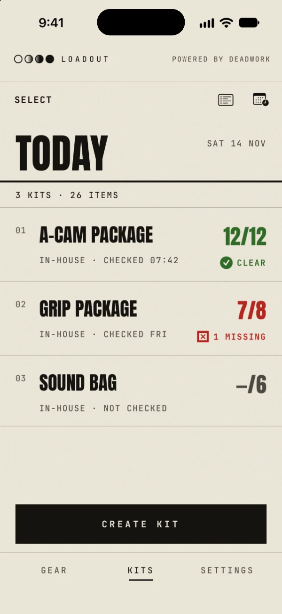

The short version
Get the free printable wrap checklist (PDF), or run the same check with your iPhone in Loadout.
Your packing list tells you what to bring. Wrap is a different job: the gear has been spread across a set all day, people are tired, and the truck has a call time. Nothing on a packing list tells you to look behind the monitor cart for a charger.
A good wrap checklist follows the gear, not the kit list. It sends you to the places things end up during a day, then has you prove each case is complete before it closes. If you don't have a kit list yet, start with our camera gear checklist for filmmakers.
Most lost gear isn't lost inside a case. It's somewhere it was used.
Run this for every case before it closes. It's also the layout of the printable sheet.
| Case | Check |
|---|---|
| Camera | Body, body cap, top handle, cage, plates, follow focus, matte box |
| Lenses | Every lens by focal length, front and rear caps, filters back in their pouches |
| Power | Batteries by number, chargers and their cables, D-tap and USB cables |
| Media | Cards by number, readers, drives, card wallet with full and empty marked |
| Monitoring | Monitors, sunhoods, wireless transmitter and receiver as a pair, SDI and HDMI cables by count |
| Sound | Recorder, mics, windscreens, lav kits as pairs, XLR cables by count, headphones |
| Grip and lighting | Lights and power supplies, stands by count, clamps by count, diffusion |
| Tools | Hex keys, multitool, flashlight, tape, markers, rain cover |
Identical items are the classic wrap loss. You own four batteries, three come home, and the case looks full because there's no empty slot to notice. Label each battery, card and drive with a number and check each number. The same goes for things that come in pairs, like wireless video and lav kits.
One page, a block per case, a box for each item and a sign-off line for the case owner. Print it, put a copy in each case lid, and tick it at wrap.
Download the wrap checklist (PDF)
Need a list for a different kind of shoot? The camera gear checklist maker builds one for your shoot type and prints it with a pack box and a wrap box.
Paper works, but it's the step people skip in a dark room at the end of a long day. Loadout runs the same case check with your iPhone camera.

It works with no signal, warns you when the case is too dark and turns on the light with one tap. You can also turn on a reminder for when your phone leaves the location.
Loadout handles the counting. A few things stay with you.
If it's one bag and one person, a printed sheet in the lid may be all you need. The order above still applies: download first, sweep the set, count look-alikes by number, close the case last. Before you leave, run our two-minute check before leaving set.